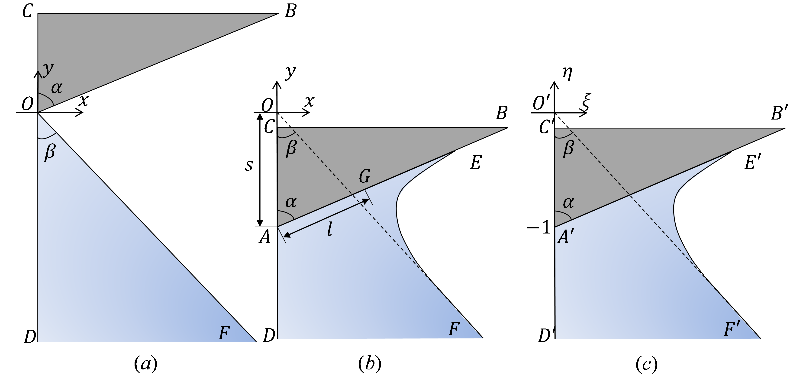

Impact of wedge bodies on wedge-shaped water surface with varying speed

Abstract
An approximate solution is proposed for the impact of wedge bodies on wedge-shaped water surfaces with varying speed, based on the similarity solution of the impact with a constant speed. The approximate solution can give fast predictions of the pressure distribution on the wedge surface and the motion of the wedge bodies in the initial stage where the impact speed is high and the peak acceleration occurs. In this study, the impact speed in the initial stage is large enough that we can simplify the water to be incompressible, weightless and inviscid, the effect of surface tension to be negligible, and the flow to be irrotational. Thus, the velocity potential can be introduced to describe the problem with complex variables. First, the similarity solution for the impact with a constant speed is derived based on Wagner’s function and Schwarz–Christoffel formula, and it agrees well with the existing methods. Second, the approximate solution for the impact with varying speed is proposed based on the above similary solution and the CFD results, by neglecting the jet region where the pressure coefficient is small. The approximate solution can give the explicit expressions of pressure coefficient and wedge body’s acceleration. In the range (-2, 1) of dimensionless variable K, the prediction of the approximate solution matches the CFD results very well.
Read the published article ↗